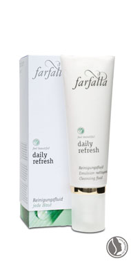
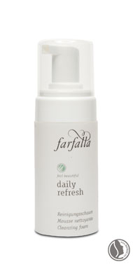
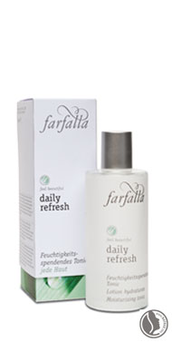
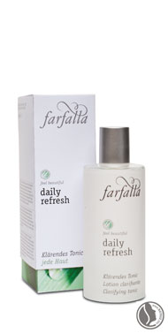
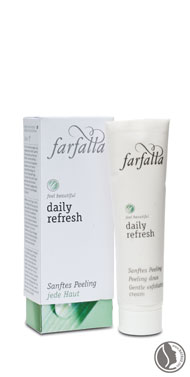

daily refresh
for daily skin cleansing care
1. Intensively yet gently cleanses skin.
2. Visibly refreshes and smoothes skin.
3. Ideal preparation for subsequent skin care.
|
|
Innovative active ingredients
Quillaja
The prized organic Quillaja saponin is isolated from the bark of the South American
soap bark tree, Quillaja saponaria. The active substances contained in this
organic raw material are particularly suited to facial cleansing. Folk medicine has
also made use of this saponin-containing bark for many years.
Aloe Vera
The organic fresh plant extract, isolated from the Aloe vera leaf, supports cell
regeneration, thanks to its rich abundance of minerals, enzymes, trace elements
and vitamins. Aloe vera dispenses moisture with the result that the skin becomes
firmer and wrinkles are reduced and softened.
Natural scents with deep-penetrating effect
Organic essential oils such as grapefruit, lemon grass, rosemary, lemon and mint,
selected in accordance with aromatherapy principles, vitalise the skin and support
the deep-penetrating effect of the plant extracts.
|  |
 |
 |
Cleansing fluid
Cleanses sensitive and dry skin intensively yet gently. Aloe vera protects
skin against moisture loss. Grapefruit,
Douglas-fir and lemon essential oils
invigoratethe complexion. Apply
cleansing fluid to damp face and gently
massage into skin. Thoroughly rinse off
with plenty of water. The cleansing
fluid can also be used as make-up
remover.
100% from natural origin – 95% of the
certifiable natural substances are organic |
Cleansing foam
Thoroughly cleanses and clarifies
normal and impure facial skin without
drying it out. Saponin from the
quillaja bark gives a special feeling of
cleanliness. Essential oils of grapefruit,
Douglas-fir and lemon invigorate the
complexion. Apply cleansing fluid to
damp face and gently massage into
skin. Thoroughly rinse off with plenty
of water.
100% from natural origin
Also recommended for skin cleansing |
Clarifying tonic
Clarifies and refreshes the skin and
removes remaining traces of makeup.
Slightly disinfecting thanks to
hamamelis water and the essential oils
in rosemary, cistus and manuka. Ideal
preparation for skin to absorb complex
of active ingredients in subsequent
skin care. After cleansing, spray tonic
on damp cotton pad and gently wipe all
over face. 100% from natural origin – 72% of the
certifiable natural substances are organic |
|  |
 |
|
Moisturising tonic
Refreshes and calms sensitive skin,
removes remaining traces of makeup.
Retains skin moisture thanks to
Centella asiatica and Aloe vera. Ideal
preparation for skin to absorb complex
of active ingredients in subsequent
skin care. After cleansing, spray tonic
on damp cotton pad and gently wipe all
over face.
100% from natural origin – 70% of the
certifiable natural substances are organic |
Gentle exfoliating cream
For a silky-smooth complexion. Exfoliating
particles made of rice and bamboo
gently remove dead skin scales, vitalise
skin and are ideal preparation for skin
to absorb complex of active ingredients
in subsequent skin care. Massage well
into clean and moist skin, avoiding eye
area. Thoroughly rinse off with plenty
of water. |
|
|